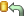
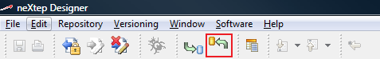
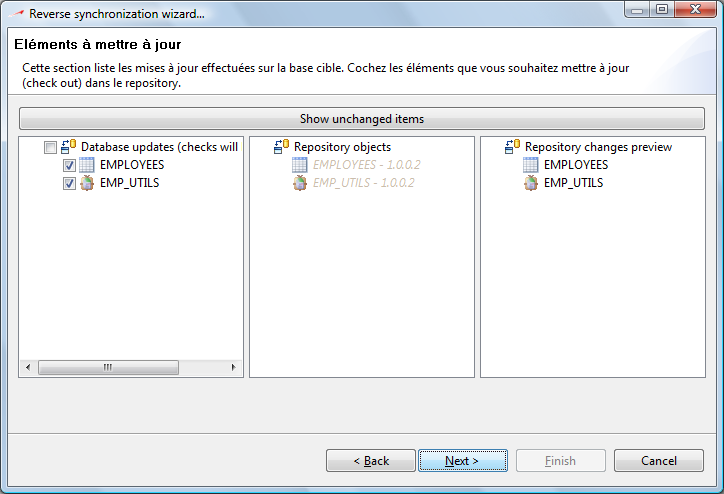
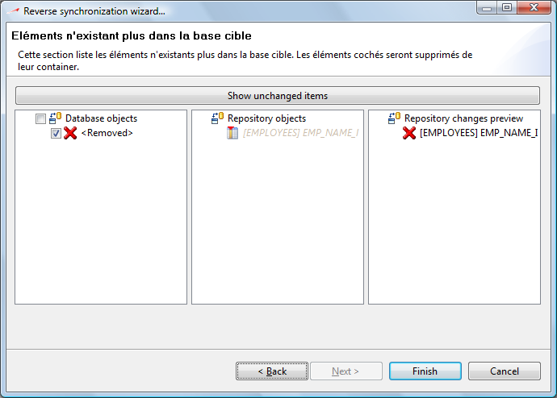

This is the reverse synchronization method. We know that you may use several different SQL-clients to develop, debug, alter your development databases and that your team may be so large that nobody can control how the changes are made to the development database structure.
This is what reverse synchronization is here for : to help you integrate any change which would have been made directly to the development database rather than in a neXtep respository view.
The synchronization is always available in the main toolbar of neXtep designer. You simply have to click this button  to start a reverse synchronization of your development environment. The command is always available on the main toolbar :

The reverse synchronization is a powerful but also a dangerous tool. It offers you to make your repository view synchronized with your current development database structure. To help you make the right changes to your repository objects, a wizard will come up as soon as you fire a reverse synchronization.
The wizard is composed of 3 parts :
Integration of items which are only present in the database
Integration of items which are modified in the database (=> different from the repository versions)
Removal of items which are no longer present in the database
Please keep in mind that these 3 parts will be shown in this order, only when there is something to display. For example, if a reverse synchronization only reveal updated elements, part 1 and 3 will not appear and the wizard will be composed of the single modification pane.
This is the first pane of the reverse synchro wizard. This pane is similar to the manual view creation from an existing database. You have 2 visions of the hierarchical structure of the development database (left pane) and of your current repository view (right pane). You can integrate new items by drag / drop, or by selecting the item to import in the left pane, selecting the target container in the right pane and click the right arrow.
Note that you can add or remove repository containers in this dialog through the tool buttons available above the right tree.
Also note that you have 2 options when integrating new elements (tools above the left tree) :
The first button is the constraint enforcement : when pushed (default) all checks will be performed by the system to ensure that you will not integrate an item which depends on other items outside of the repository. You should never need to disable this option except for rare cases when you might have a dependencies deadloop : a table A has a foreign key to table B which has a foreign key to table A.
The second button is the dependency puller. It allows you to pull all dependent objects when you add an object to the repository. So when activated :
If table A has a foreign key to table B
If A and B are not part of the current repository view
If the user tries to integrate B, the table A will be integrated as well
The update pane of the reverse synchronization wizard look very similar to a classic synchronization dialog of neXtep Designer. Note that this time the database and repository sections are reversed : database contents are shown in the left tree whereas the repository contents are shown in the central part. Like a classic synchronization, you decide which element to integrate by checking it in the leftest tree. When you will finish the wizard, all checked elements will be updated.

Elements eligible for removal are listed in the last part of the reverse synchronization wizard. This last part is also a standard synchronization dialog which shows elements to remove and allow you to check / uncheck the elements to define if you want to remove them or not, respectively.
We chose to isolate the “removal list” from the “updated items list” for you to pay much attention to the removed items.

Some restrictions apply to the reverse synchronization. Unlike the standard synchronization, you perform repository actions to integrate the changes from the database into the repository. Depending on the current versioning state of your view contents, you may or may not integrate the changes.
Here is a list of typical actions / restrictions:
You cannot integrate changes in a committed container, you must check it out first
You cannot integrate changes of a database strucutral element if it is checked out. You should commit or undo your check out if you want the change to be integrated.
All changes are integrated through new dedicated versions of the elements. After the synchronization, elements will stay checked out.
Undo restrictions :
At the moment, the reverse synchronization engine is not capable of undoing all the changes it makes to the repository. As a result the first pane of the reverse synchronization wizard is not undoable, all actions you perform in this pane will be directly made to your current view and cancelling the wizard will not cancel your actions.
We currently work to fix this issue as soon as possible.